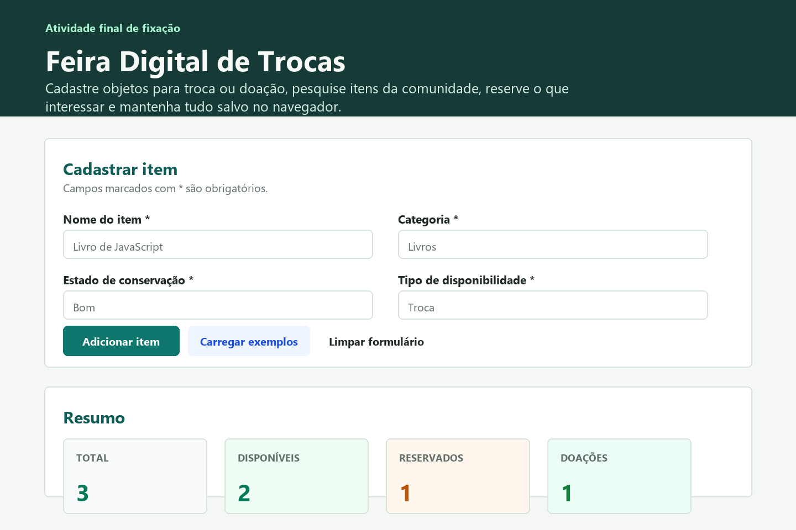
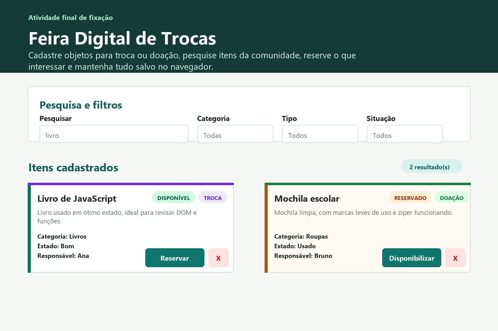
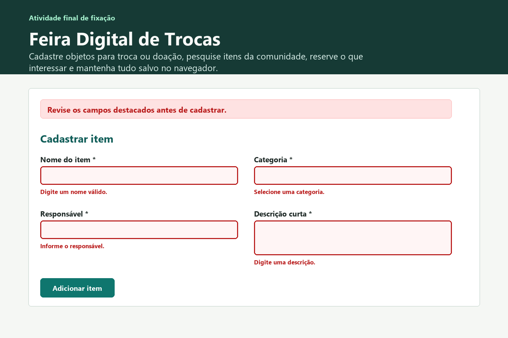

Instituição: SENAC
Unidade curricular: Desenvolvimento Web
Projeto: Feira Digital de Trocas
Primeira Documentação de um Projeto de Software
- Aluno(a)
- Jeová
- Turma
- Preencher com a turma
- Data
- 30 de agosto de 2026
1. Pesquisa sobre documentação de software
O que é documentação de software?
Documentação de software é o conjunto de textos, imagens, tabelas, explicações e registros que ajudam uma pessoa a entender um sistema. Ela não substitui o código-fonte, mas explica o objetivo do projeto, como ele foi organizado, quais tecnologias foram usadas, quais dados são tratados e como o usuário interage com a aplicação.
Para que serve?
A documentação serve para orientar o uso, facilitar a manutenção, registrar decisões tomadas durante o desenvolvimento e permitir que outras pessoas compreendam o projeto sem depender apenas da leitura direta do código. Ela também ajuda o próprio desenvolvedor a lembrar como o sistema funciona depois de algum tempo.
Por que documentar um projeto?
Um projeto documentado fica mais fácil de apresentar, testar, corrigir e evoluir. Sem documentação, uma alteração simples pode demorar mais, porque a pessoa precisa descobrir sozinha onde cada coisa está, qual é a função de cada arquivo e quais regras não podem ser quebradas.
Quem utiliza a documentação?
A documentação pode ser usada por estudantes, professores, usuários, desenvolvedores, avaliadores e qualquer pessoa que precise entender a aplicação. Cada público procura informações diferentes: o usuário quer saber como usar, o professor avalia o que foi feito e o desenvolvedor precisa entender a estrutura técnica.
Existe apenas um tipo de documentação?
Não. Existem documentos de apresentação, guias de uso, tutoriais, documentação técnica, documentação de referência, registros de decisão e documentação de manutenção. O modelo Diátaxis organiza a documentação em quatro necessidades principais: aprender, executar uma tarefa, consultar informações e entender conceitos.
O que torna uma documentação fácil de entender?
Uma documentação fica clara quando usa títulos objetivos, linguagem simples, ordem lógica, exemplos verdadeiros, imagens explicadas, tabelas quando ajudam a comparar informações e referências das fontes pesquisadas. Também é importante não inventar funcionalidades e não transformar o documento em uma cópia do código-fonte.
2. Elementos importantes de uma documentação
| Elemento | Para que serve | Informações que podem aparecer |
|---|---|---|
| Capa | Identifica o trabalho entregue. | Instituição, unidade curricular, nome do projeto, aluno, turma e data. |
| Apresentação do projeto | Explica o que foi desenvolvido e qual problema a aplicação resolve. | Objetivo, contexto, público-alvo e resumo da solução. |
| Tecnologias utilizadas | Mostra quais recursos técnicos foram usados e por quê. | HTML, CSS, JavaScript, DOM, eventos, JSON e Local Storage. |
| Funcionalidades | Registra o que o sistema realmente permite fazer. | Cadastro, validação, filtros, reserva, exclusão e persistência dos dados. |
| Estrutura dos dados | Ajuda a entender quais informações são guardadas e manipuladas. | Campos do item, identificador, situação, data de cadastro e chave do armazenamento. |
| Telas da aplicação | Facilita a leitura visual do projeto. | Capturas, títulos, legendas e explicações das ações possíveis. |
| Eventos e interações | Explica como as ações do usuário acionam o JavaScript. | Eventos de envio, clique, digitação, alteração de filtros e teclado. |
| Dificuldades e soluções | Registra aprendizados reais do desenvolvimento. | Problemas encontrados, tentativas, solução aplicada e melhorias futuras. |
| Referências | Dá crédito às fontes pesquisadas e permite consulta posterior. | Links, nome da fonte e assunto pesquisado. |
3. Boas práticas para entrega de uma documentação
- Organizar títulos e subtítulos. Eles criam uma sequência de leitura e ajudam a localizar rapidamente cada assunto.
- Usar linguagem clara. O texto deve explicar o projeto com palavras próprias, sem depender de frases copiadas de sites ou do próprio código.
- Inserir imagens com legenda. Cada captura precisa ter título e explicação, pois a imagem sozinha não mostra o motivo de aquela tela existir.
- Utilizar tabelas apenas quando ajudam. Tabelas são úteis para comparar tecnologias, dados, eventos e funcionalidades, mas não devem substituir toda a explicação.
- Manter fidelidade ao projeto. A documentação deve falar somente das funcionalidades realmente desenvolvidas.
- Registrar referências. As fontes consultadas devem aparecer no final do documento, com links e indicação do assunto.
- Revisar antes de entregar. É importante conferir ortografia, nomes de arquivos, organização visual e se o PDF abre corretamente.
-
Nomear o arquivo de forma padronizada. Para esta
atividade, o formato pedido é
Documentacao_FeiraDigital_NomeSobrenome.pdf.
4. Apresentação do projeto
A aplicação Feira Digital de Trocas é uma página web criada para cadastrar objetos que podem ser trocados ou doados. Ela permite organizar uma pequena feira comunitária diretamente no navegador, sem banco de dados externo.
- Objetivo
- Facilitar o cadastro, a consulta e a reserva de itens disponíveis para troca ou doação.
- Problema que procura resolver
- Em uma feira de trocas, as informações podem se perder se ficarem apenas em conversas ou anotações. O sistema centraliza os dados em uma lista pesquisável.
- Público-alvo
- Estudantes, professores, turmas, comunidades escolares ou grupos que desejem organizar trocas e doações de objetos simples.
- Arquivos principais
-
O projeto está dividido em
index.html,style.cssescript.js.
5. Tecnologias utilizadas
| Tecnologia | Uso no projeto |
|---|---|
| HTML | Estrutura a página, com cabeçalho, formulário, resumo, filtros, lista de itens e rodapé. |
| CSS | Define cores, espaçamentos, layout responsivo, cartões, estados de validação, etiquetas e aparência dos botões. |
| JavaScript | Controla o comportamento da aplicação: cadastro, validação, filtragem, reserva, exclusão, mensagens e atualização do resumo. |
| DOM | Permite buscar elementos da página, alterar textos, criar cartões dinamicamente e exibir mensagens ao usuário. |
| Eventos | Conectam ações do usuário ao sistema, como enviar formulário, clicar em botões, digitar na busca e mudar filtros. |
| Local Storage |
Guarda a lista de itens no navegador usando a chave
feira-digital-itens, permitindo que os dados
continuem disponíveis após atualizar ou fechar a página.
|
| JSON | Converte a lista de objetos JavaScript em texto para salvar no Local Storage e depois recupera esse texto como dados novamente. |
6. Funcionalidades desenvolvidas
| Funcionalidade | Como o usuário utiliza | Resultado | Recursos envolvidos |
|---|---|---|---|
| Cadastro de item | Preenche nome, categoria, estado, tipo, responsável e descrição. | Um novo cartão é criado e salvo. | Formulário, JavaScript, DOM, Local Storage. |
| Validação dos campos | Clica em adicionar item com campos vazios ou dados repetidos. | Campos com erro são destacados e uma mensagem é exibida. | Funções de validação, classes CSS e mensagens no DOM. |
| Carregar exemplos | Clica no botão “Carregar exemplos”. | Itens de exemplo são adicionados, sem duplicar os que já existem. | Array de exemplos, verificação de duplicidade e Local Storage. |
| Contador da descrição | Digita no campo de descrição curta. | O contador mostra quantos caracteres foram usados de 200. | Evento input e atualização de texto no DOM. |
| Resumo automático | Realiza cadastros, reservas, disponibilizações ou exclusões. | Total, disponíveis, reservados e doações são recalculados. | Funções de filtro, contadores e manipulação do DOM. |
| Pesquisa por texto | Digita um termo no campo de pesquisa. | A lista mostra itens cujo nome ou descrição combinam com a busca. | Evento input e normalização de texto. |
| Filtros | Seleciona categoria, tipo ou situação. | A lista é atualizada conforme os critérios escolhidos. | Eventos change, comparação de dados e renderização. |
| Reservar item | Clica no botão “Reservar item” dentro do cartão. | O item muda para a situação “reservado”. | Delegação de clique, alteração do objeto e salvamento. |
| Disponibilizar novamente | Clica no botão do item reservado. | O item volta para a situação “disponível”. | Atualização de estado, DOM e Local Storage. |
| Excluir item | Clica em “Excluir” e confirma a ação. | O item é removido da lista e do armazenamento. | confirm, filtro de array e persistência. |
| Atalhos de teclado | Pressiona / para focar a busca ou Esc para limpar. | A pesquisa fica mais rápida de usar. | Evento keydown. |
7. Dados utilizados e armazenamento
Cada item cadastrado é representado por um objeto JavaScript. Esse objeto possui as informações digitadas pelo usuário e alguns dados criados automaticamente pelo sistema.
| Campo | Finalidade |
|---|---|
id |
Identifica cada item de forma única para reservar, disponibilizar ou excluir. |
nome |
Nome do objeto cadastrado. |
categoria |
Grupo do item: livros, eletrônicos, roupas, casa, esportes ou outros. |
estado |
Estado de conservação informado no formulário. |
tipo |
Indica se o item está disponível para troca ou doação. |
responsavel |
Nome ou identificação da pessoa responsável pelo item. |
descricao |
Texto curto com detalhes importantes sobre o objeto. |
situacao |
Mostra se o item está disponível ou reservado. |
criadoEm |
Data e horário em que o cadastro foi feito. |
Como os dados são criados, alterados e removidos
Um novo item é criado quando o usuário envia o formulário com dados
válidos. O sistema gera um identificador, define a situação inicial
como disponivel e registra a data de criação. Quando o
usuário reserva ou disponibiliza um item, apenas o campo
situacao é alterado. Quando o usuário exclui, o item é
retirado do array de itens.
Função do Local Storage
O Local Storage guarda os itens no próprio navegador. A função
salvarItens transforma o array em JSON e salva com
localStorage.setItem. A função carregarItens
recupera esses dados quando a página abre. Por isso, ao atualizar a
página, a lista não volta vazia.
8. Telas da aplicação



9. Eventos e interações
| Evento | Onde é usado | Ação do usuário | O que acontece |
|---|---|---|---|
DOMContentLoaded |
Documento inteiro | A página termina de carregar. | O sistema seleciona elementos, carrega dados salvos e ativa os outros eventos. |
submit |
Formulário de cadastro | Usuário clica em “Adicionar item”. | Os dados são validados e, se estiverem corretos, o item é salvo. |
reset |
Formulário | Usuário clica em “Limpar formulário”. | O contador e os avisos de validação são limpos. |
click |
Botão de exemplos | Usuário clica em “Carregar exemplos”. | Itens prontos são adicionados para testar a aplicação. |
click |
Lista de itens | Usuário clica em reservar, disponibilizar ou excluir. | A função identifica o botão pelo atributo data-acao e executa a ação correta. |
input |
Campo de pesquisa | Usuário digita uma busca. | A lista é filtrada imediatamente. |
input |
Descrição | Usuário digita no textarea. | O contador de caracteres é atualizado. |
change |
Filtros de categoria, tipo e situação | Usuário escolhe uma opção. | Os cartões exibidos são recalculados. |
keydown |
Documento | Usuário pressiona / ou Esc. | A busca recebe foco ou é limpa. |
10. Funcionamento básico da aplicação
- O usuário acessa a página da Feira Digital de Trocas.
- O JavaScript carrega os itens salvos no Local Storage, se existirem.
- O usuário preenche o formulário com os dados do item.
- Ao enviar, o sistema valida campos obrigatórios e verifica duplicidade.
- Se houver erro, a página mostra mensagens e foca o primeiro campo com problema.
- Se estiver correto, o sistema cria um objeto de item com id, situação e data.
- O novo item é salvo no array e gravado no Local Storage.
- A lista de cartões e os números do resumo são atualizados.
- O usuário pode pesquisar e combinar filtros para encontrar itens.
- Nos cartões, o usuário pode reservar, disponibilizar novamente ou excluir.
- Depois de cada alteração, o sistema salva novamente e mostra uma mensagem de confirmação.
11. Dificuldades, soluções e melhorias futuras
Dificuldade encontrada
Uma dificuldade importante foi manter a lista atualizada em todos os pontos da aplicação. Quando um item é cadastrado, reservado ou excluído, não basta alterar apenas o array: também é necessário atualizar a tela, recalcular o resumo e salvar novamente no Local Storage.
Solução aplicada
A solução foi separar o código em funções com responsabilidades
específicas, como salvarItens,
aplicarPesquisaEFiltros, renderizarItens e
atualizarResumo. Assim, depois de cada ação importante, o
sistema chama novamente essas funções e mantém os dados sincronizados.
Outra atenção necessária
O carregamento dos dados salvos também exigiu cuidado. A função
carregarItens usa try...catch para evitar que
um dado inválido quebre a aplicação. O código também normaliza itens
antigos e aceita uma chave anterior chamada itens.
Melhorias futuras
- Permitir editar um item já cadastrado.
- Adicionar imagem ou foto do objeto.
- Criar filtro por responsável.
- Permitir limpar todos os itens com confirmação.
- Exportar a lista em arquivo para compartilhar com outras pessoas.
- Adicionar modo de impressão da lista de itens.
12. Conclusão
Produzir esta documentação mostrou que desenvolver um projeto não é apenas escrever código. Também é necessário explicar o problema, o funcionamento, as tecnologias, os dados e as decisões tomadas. A documentação ajuda a apresentar o trabalho, facilita futuras melhorias e permite que outra pessoa entenda a aplicação sem precisar analisar todos os arquivos imediatamente.
No projeto Feira Digital de Trocas, a documentação também ajudou a perceber como HTML, CSS, JavaScript, DOM, eventos e Local Storage se conectam para formar uma aplicação web interativa.
13. Referências
- MDN Web Docs. Web Storage API. Consulta sobre Local Storage e armazenamento no navegador.
- MDN Web Docs. Document Object Model (DOM). Consulta sobre DOM e manipulação da página.
- MDN Web Docs. DOM events. Consulta sobre eventos e interações no navegador.
- MDN Web Docs. Client-side form validation. Consulta sobre validação de formulários.
- Write the Docs. Software documentation guide. Consulta sobre boas práticas de documentação de software.
- Diátaxis. Diátaxis documentation framework. Consulta sobre tipos e objetivos de documentação técnica.
- Google for Developers. Google developer documentation style guide. Consulta sobre clareza e consistência em documentação técnica.